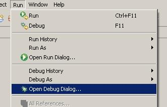

Debugging Project
In this tutorial you will learn how to debug your Coldfire C/C++ applications remotely inside your target
board. The target is the board with an Coldfire heart. All debugging actions are preformed using GNU GDB
toolkit ported to m68k.
Before you start debugging, check out the supported Coldfire processors to be sure about compability with
your target board. Debug will use processor type defined in the toolchain settings, described eaarlier.
Debug session needs compiled ELF image file, ready to download. So be sure to compile correctly your final
codes before debugging. Debugger is asking you to select downloadable image file.
Creating Debug Configurations
After compiling your application successfully, you should test correctness of the application. For hardware
debugging you can't run the application on the host computer (your PC), so you should hook up the board,
download the result image into the target board and run (debug) it in-circuit. The Coldfire debugger plugin
supports debugging your application running on the target system. The followings are steps you should take
to create a new debug configuration.
Step 1: Compile your codes as described in earlier chapters to create ELF image.
Step 2: Select Run > Open Debug Dialog... menu.

A window containing list of debug configurations will be displayed.
Step 3: Select Coldfire Debugger
Step 4: Click New
A Debug configurations is created. Now you should select working project and its desired to download image.
For both of them you can search using Browse button which shows a filtered appropriate objects inside
workspace and projects trees.
Step 5: Select Debugger tab in the newly created page.
Step 6: Change the selected Debugger to Coldfire Embedded GDB (select fron the list
of avaiable debuggers).
The main tab settings contain gdb commands and initial scripts to set appropriate settings. The default
value for the GDB debugger is 'm68k-elf-gdb'. It works great for ELF images. You can change this
if you are using different debugger or image type. For example, 'm68k-coff-gdb' is used to debug COFF images.

Step 7:Click Debug to start debugger and change the workspace looking to the debug perspective.